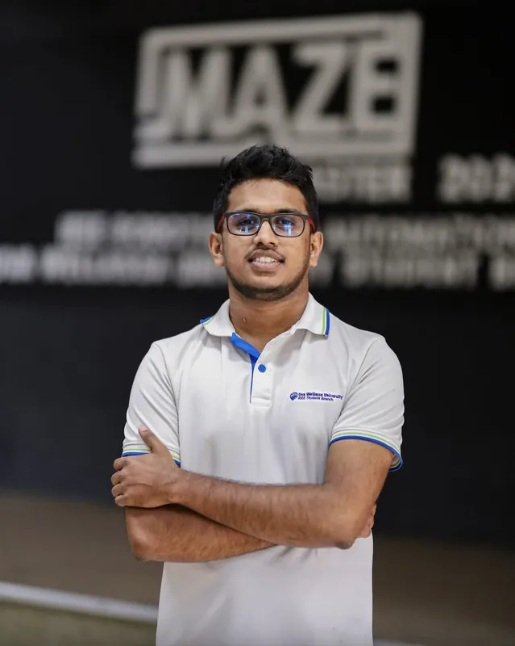

Open to Engineering Opportunities · Available Dec 2026
Mechatronics (BSc Hons) · Uva Wellassa University
Indunil Vishwajith
Focus: industrial automation, embedded systems, IoT & wireless systems, robotics, CAD & machine design, research & development.
I design, build and program electromechanical systems: PLC and pneumatic automation, ESP32 and STM32 firmware, custom PCBs and SolidWorks mechanisms. I'm currently a Research & Engineering Intern at ACCIMT, and my final-year research was a real-scale 3-DOF motion simulator with VR synchronisation.

- 3.86
- GPA · Dean's List, 5 semesters
- 2+ yrs
- Apparel manufacturing (MAS)
- 10+
- Engineering projects
About
From CAD model to working machine
I'm a Mechatronics undergraduate at Uva Wellassa University (BSc Hons, GPA 3.86, Dean's List in five semesters; final results pending). What I enjoy most is the full engineering loop: modelling a part in SolidWorks, integrating the electronics, writing the control logic, then testing until it runs reliably.
At ACCIMT's Industrial Services Division I'm a Research & Engineering Intern, supporting development, integration and testing of embedded and automation prototypes. That includes ESP32 and PIC-based hospital systems, field tests of a thermal-camera elephant detection system, and a radar-based detection project I'm working on now. My final-year research was a real-scale 3-DOF motion simulator with VR synchronisation, and I co-authored a conference paper at IMPETUS 2026.
Before university I spent over two years in apparel manufacturing at MAS Holdings, in quality assurance and raw-material stores, which showed me how production flow and AQL standards affect output. I'm looking for engineering roles in automation, embedded systems and robotics, and I'm open to R&D and research positions too.
- Location
- Digana, Kandy, Sri Lanka
- Research
- Final-year project: 3-DOF motion simulator (completed)
- Publication
- IMPETUS 2026 conference paper
- Industry
- Apparel manufacturing, MAS Holdings (2+ years)
- Languages
- Sinhala (fluent) · English (professional)
- Open to
- Engineering & R&D roles · Available Dec 2026
Projects
Selected engineering projects
Skills
Skills & tools
Industrial Automation
PLC programming and pneumatic circuit design. XINJE from university project work; Siemens and Mitsubishi from hands-on work at ACCIMT.
Used in: PLC sorting conveyor, ACCIMT
Embedded Systems & IoT
Firmware, custom PCBs, sensor interfacing, wireless communication and circuit troubleshooting.
Used in: Maze robot, label dispenser, nurse calling system, patient number display, radar prototype
Robotics & Motion Control
Motor control, sensing and calibration for robots and motion platforms.
Used in: Maze robot, motion simulator
CAD/CAM & Mechanical Design
Part and assembly modelling, static structural analysis, and CAM simulation with G-code generation.
Used in: Scissor lift, suspension design, motion simulator
Programming & Vision
Control software, monitoring GUIs and OpenCV image analysis.
Used in: Radar prototype, plant phenotyping, motion simulator GUI
Manufacturing & Teamwork
Shop-floor experience in apparel manufacturing, plus teamwork and mentoring.
Used in: MAS Holdings, IEEE UWU, CodeClub UWU
Experience
Experience
Research and engineering work at ACCIMT, and apparel manufacturing at MAS Holdings before university.
Research & Engineering Intern
ACCIMT — Industrial Services Division, Moratuwa
- Developing a radar-based elephant detection prototype for railway bends (ongoing): a Python pipeline for a TI AWR2944P mmWave radar with tracking and live visualisation.
- Contributed to hospital projects using ESP32-based IoT communication and PIC microcontrollers.
- Hands-on work with Siemens and Mitsubishi PLCs.
- Took part in field tests of a thermal-camera, computer-vision-based elephant detection and alert system.
- Circuit testing, troubleshooting and system integration under a Senior Research Engineer.
MAS Holdings
Pallekele (apparel manufacturing, before university)
Team Member, Raw Material Stores
Managed raw-material inventory and tracking, recorded stock movements in the ERP system, and helped make sure materials were available on time.
AQL Quality Assurance
Carried out garment inspections to AQL standards, identified production defects and supported corrective actions with line teams.
Taught me how production flow, material availability and AQL standards affect output.
Education
Education & research
A mechatronics degree with a final-year research project and a published conference paper.
BSc (Hons) in Science & Technology — Mechatronics
Uva Wellassa University of Sri Lanka · Aug 2022 – Sep 2026
- 3.86
- GPA
- 5 semesters
- Dean's List (Semesters 2–6)
Academic requirements completed; final results pending.
Final-year research: 3-DOF chair-mounted motion simulator with VR synchronisation · View project
GCE Advanced Level, Physical Science (2020)
B/Girandurukotte Secondary School · Combined Mathematics B · Chemistry B · Physics C
Publication
Technical Assessment and Design Framework for Floating Solar Photovoltaic Systems in Sustainable Reservoir Applications in Sri Lanka
W. A. I. N. Vishwajith & T. Lakmali — IMPETUS 2026, International Conference on Computing, Engineering and Technology, pp. 256–261
doi:10.5281/zenodo.20658461Certifications
- Robotics & Mechatronics 1, 2 & 3 — Udemy
- Project Management 101 — Simplilearn
- Python for Beginners — University of Moratuwa (CODL)
- AI for Beginners · Effective Leadership — HP LIFE
Leadership
Leadership & recognition
- Head of Membership Development, IEEE UWU Student Branch Apr 2025 – presentLeads membership initiatives and student engagement activities.
- Program Team Member, IMPETUS '26, IEEE UWU Student Branch Jul 2025 – presentHelped organise the technical programme and student events.
- Organising Team Member, MazeMaster 2026
- Volunteer Programming Instructor, CodeClub UWU Oct 2024 – Oct 2025Taught programming fundamentals and mentored students.
- Lead, Publicity Team (Tech Talk), IEEE UWU Student Branch Jun 2024 – Apr 2025
- Entity Coordinator, IEEE Open Day 2024 Apr – Aug 2024
- Team Member, Publicity Team, ElectroQuesta Nov – Dec 2023
- Junior Coordinator, Innotic's 24 Oct 2022 – Oct 2023
- Member, Uva Rayon Media Club UWU Nov 2024 – present
- Member, Rotaract Club Oct 2022 – present
- Member, University Baseball Team Oct 2022 – Oct 2024
Recognition: Letter of appreciation from the Dean, UWU EXPO 2025
Contact
Let's work together
Open to engineering and R&D opportunities in automation, embedded systems, robotics and research. Available from December 2026. References available on request.
Email me